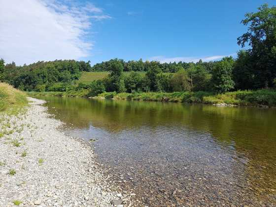
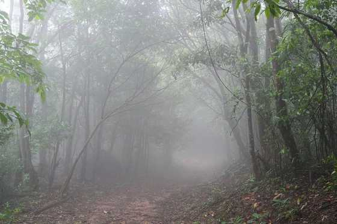
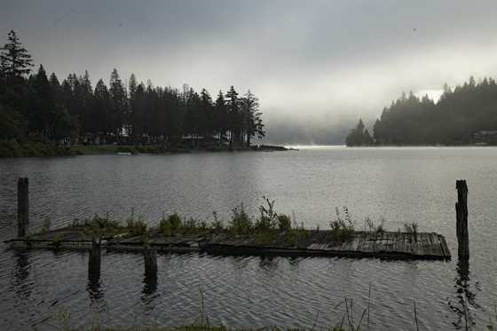
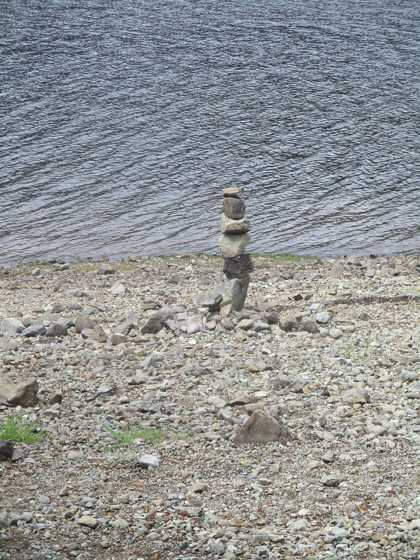

YORIMICHI LABORATORY川のそばで、
川のそばで、
ちょっと寄り道。
焼き菓子とコーヒーを。
四万十川の沈下橋のそば。道すがらふらりと立ち寄って、焼き菓子とコーヒーでひと息つく。そんな寄り道の場所をイメージしています。

四万十川の沈下橋のそば。道すがらふらりと立ち寄って、焼き菓子とコーヒーでひと息つく。そんな寄り道の場所をイメージしています。
高知県四万十市田出ノ川、高瀬沈下橋の近くにある、焼き菓子とコーヒーのお店です(Instagramの紹介による)。北海道産小麦100%を使ったマフィン、スコーン、カヌレ、コーヒーを扱い、冷凍便セットの全国発送にも対応しているとのことです。イベント出店の案内もあります。
店名の「よりみち研究所」に込めた意味は確認できていないため、ここでは触れません。
※写真は全てフリー素材のイメージで、店舗の実際の様子ではありません。




冷凍便セットの全国発送あり。詳しい内容・価格・営業時間・定休日は準備中です(不定休とのこと。最新情報はInstagramをご覧ください)。電話番号:準備中。


以下はイメージ例です。実在のお客様の声ではありません。
ドライブの途中に寄ってみました。焼き菓子とコーヒーで、旅のいい休憩になりました。
お土産のスコーンを選ぶ時間も楽しかったです。また近くに来たら寄りたいです。
川の近くでのんびりできる場所。ゆっくり過ごせました。




〒787-1229 高知県四万十市田出ノ川846-1 南隣
電話:準備中 / 営業時間・定休日:準備中
Instagram:@yorimichi_40010
掲載写真はフリー素材のイメージであり、店舗の実際の様子ではありません。